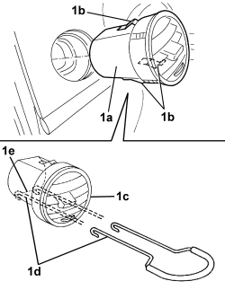

5010C38 SIDE AIR VENT (ONE) LEFT OR RIGHT IN DASHBOARD - R.R.
- Path
- Procedures > 50 AUXILIARY UNITS > 5010 CLIMATE CONTROL - MISCELLANEOUS > 5010C AIR VENTS > 5010C38 SIDE AIR VENT (ONE) LEFT OR RIGHT IN DASHBOARD - R.R.
- Kind
- repair procedure (removal / refitting; the operation number is the code)
- Applies to
- all engines; all production periods
- Interactive page
- https://sloeber94.github.io/elrnDB-aBrrSpdr/en/#/946002251
Applies to: all engines; all production periods
 Removing
Removing
 Refitting
Refitting1. Extract the vent (1a), releasing the retaining clips (1b).

Applies to: all engines; all production periods
Refitting
Removing- Check that the vent is not damaged.
- Place the vent in position and attach the retaining clips.